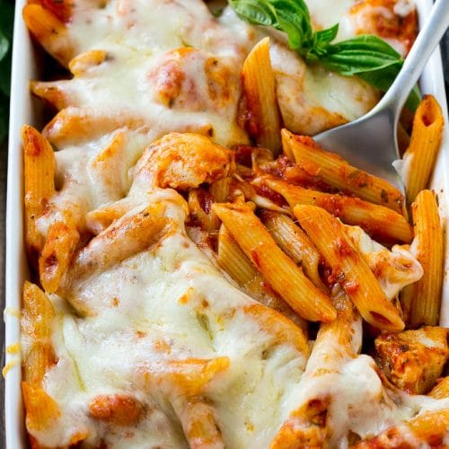

Chicken Marinara Pasta

Description
This is a simple recipe for when I'm craving something cheesy and easy!
Ingredients
- 1.5 lbs of cooked chicken meat (I use pulled rotisserie meat from Costco)
- 1 to 2 tbsps extra virgin olive oil
- 24 oz marinara sauce (I use Rao's Homemade)
- 1 lbs box of pasta of choice (I use Barilla)
- 1/4 cup shredded mozarella cheese
- 1/4 cup grated parmesan cheese
- 1 medium sized yellow onion, chopped
- 2 cloves of garlic, minced
- salt and pepper to taste
Steps
- Cook pasta according to package directions.
- In a small saucepan, saute onion in oil until tender.
- Add garlic; cook 1 minute longer.
- Stir in the marinara sauce, chicken, salt, and pepper and bring to a boil.
- Reduce heat; simmer, uncovered, for 15 minutes. Preheat oven to 375 degrees fahrenheit while waiting.
- Drain pasta; stir into saucepan.
- Transfer to a greased 1-qt. baking dish. Top with cheeses. Bake, uncovered for 10-15 minutes or until cheese is melted.
- Remove from oven and let cool. Enjoy!
Home